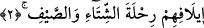

Zayıfı da yer, semizi de koymaz hiçbir şey,
Onun bir tüyünü bile bırakmaz iki kanatlı kuşa!
Kureyş de böyledir karada işte,
Beldeleri yer hızlı bir yiyişle!
Nebîleri var onların, âhir zaman Nebîsi,
Yayacak Kureyş içinde katli ve yaralayışı!
Kâmûs’un açıklamasına göre, Arapçada “karaşe” fiili kesmek, oradan buradan
toplamak, bir araya getirmek, birbirine geçirmek, katmak demektir. Kureyş kelimesi işte
bu kökten ve bu mânâdan türemiştir. Çünkü onlar da Harem-i Şerif’te toplanmışlardır.
Veya onlar ticâret için toplanıyor, malları bir araya getiriyor ve onları satın alıyorlar.
Ya da bir gün Nadr b. Kinâne elbisesi içinde toplanmış ve onlar da “takarraşa/toplandı”
demişlerdi, bu sebeple onlara Kureyş denilmişti. Veya Nadr b. Kinâne kavminin yanına
gelmiş, kavmi “Sanki o çok şiddetli bir hamle gibi” dedikleri için kavmi bu ismi
almıştır. Veya Kusayy için, “el-Kureşî” lakabı kullanıldığı veya onlar hacıları birer
birer kontrol edip ihtiyâçlarını giderdikleri için bu isimle isimlendirilmişlerdir. Veya
köpek balığının ism-i tasğîri ile isimlendirilmişlerdir. Bu hayvan denizde yaşar ve diğer
bütün deniz hayvanları ondan korkar. Veya Kureyş b. Yahlüd b. Ğalib b. Fihr’e nisbeten
bu ismi almışlardır. Bu zat onların kervanlarının başında idi. Bu sebeple ondan
bahsederken, “Kureyş’in kervanı geldi. Kureyş’in kervanı yola çıktı” gibi ifâdeler
kullanıyorlardı. Bu kelimenin ism-i mensûbu ise, “Kureşî” ve “Kureyşî” şeklindedir.
2. Evet, kış ve yaz seyahatleri onlara kolaylaştırıldığı için,
Bu cümle birinciden bedeldir. “Rıhle” göçmek, yola çıkmak anlamınadır. “Ruhle” ise
yolculuğa çıkılan istikamet demektir. Rıhle kelimesinin aslı, kuvvetli deve mânâsına
gelen râhile üzerinde gitmek demektir. Sonra bu fiil, her türlü yürüyüş için kullanılır
olmuştur.
Kelime ile, yaz ve kış yolculuğu olmak üzere iki yolculuk kasdedildiği hâlde, ikil
değil de tekil gelmiştir. Çünkü karışıklığa düşme tehlikesi yoktur ve bu kelime cins
ismidir. Cins isimleri tek için kullanılabileceği gibi, çoğul için de kullanılır. Îlâf
kelimesinin ilk kullanımında mef’ul gelmeyişi, sonra da mef’ullü kullanımı ile bundan
bedel getirilişi, onun şânını yüceltmek, o konudaki nîmetin büyüklüğünü hatırlatmak
içindir.